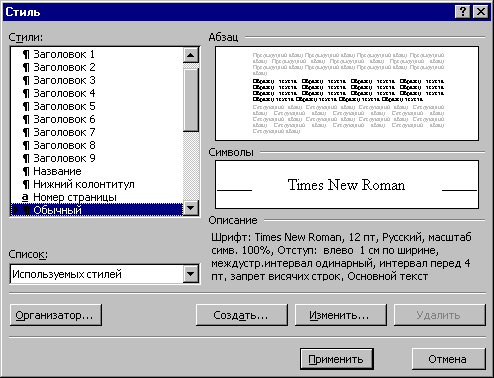

Оформляя абзац, приходится задавать такие его параметры как: положение относительно полей, абзацный отступ, споособ выравнивания, расстояние между строками и между соседними абзацами, включать ли его в оглавление или нет, параметры шрифта, табуляция и т.д.
В MS WORD можно запомнить все значения этих параметров и дать этому набору значений имя. Такой именованный набор значений, определяющих вид абзаца на странице и называется стилем оформления абзаца.
В MS WORD имеются стандартные стили, например: Обычный (используется для оформления основной части текста), Заголовок1, Заголовок2, Заголовок3 (тспользуются для оформления заголовков).

Рисунок .1
Назад | Содержание | Вперед